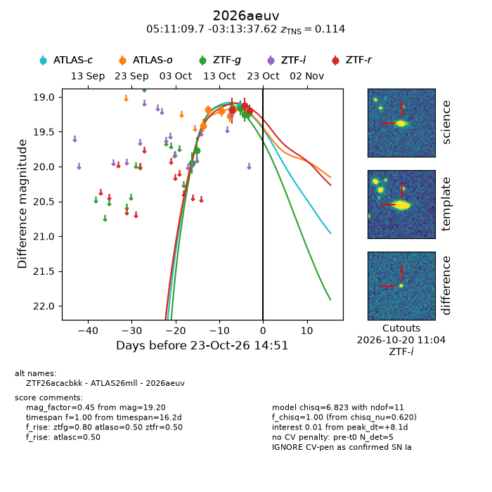
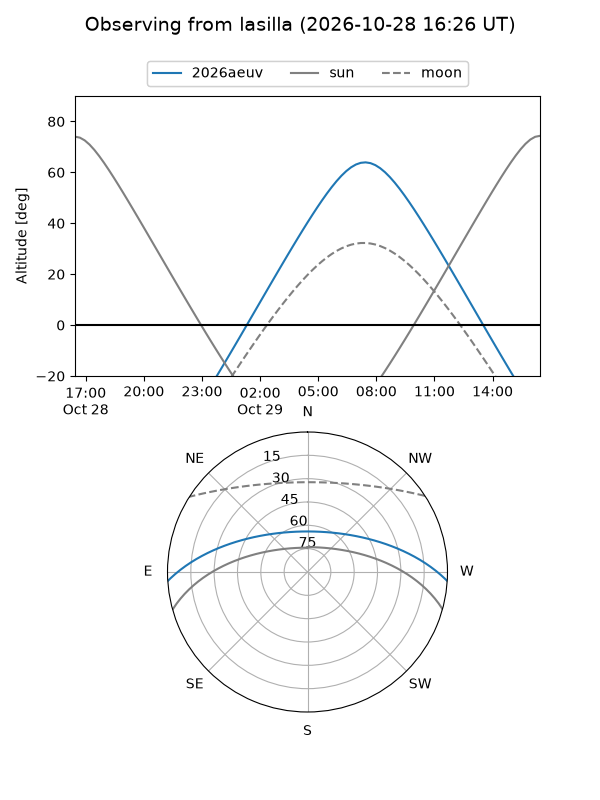
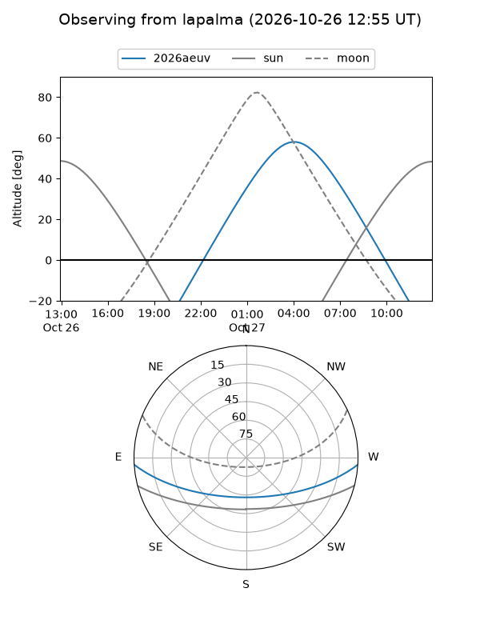
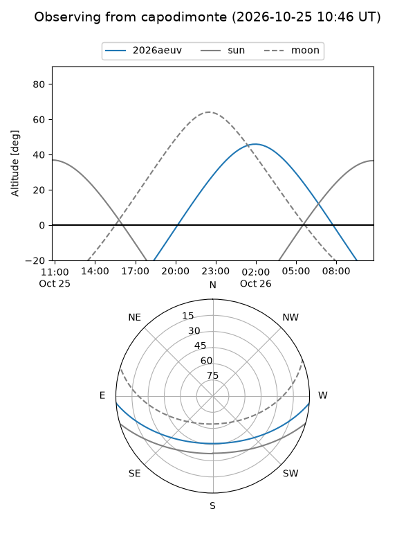
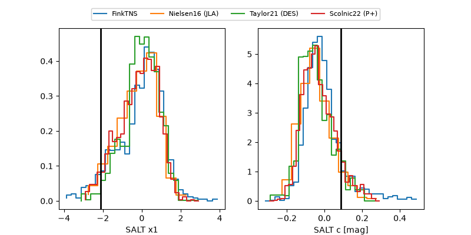

2026aeuv
Target 2026aeuv at 2026-10-23 14:54
Aliases and brokers:
FINK-ZTF: ztf.fink-portal.org/ZTF26acacbkk
Lasair-ZTF: lasair-ztf.lsst.ac.uk/objects/ZTF26acacbkk
ALeRCE-ZTF: alerce.online/object/ZTF26acacbkk
YSE-PZ: ziggy.ucolick.org/yse/transient_detail/2026aeuv
TNS name: wis-tns.org/object/2026aeuv
Direct TNS query: direct search
alt names
ZTF26acacbkk (ztf,fink_ztf)
2026aeuv (tns,yse)
ATLAS26mll (atlas)
Coordinates:
equatorial (ra, dec) = 77.7904,-3.22712
equatorial (HMS+DMS) = 05:11:09.70,-03:13:37.62
galactic (l, b) = (203.9591,-23.71381)
Flags:
TNS type: SN Ia
TNS redshift: 0.1140
peak dt: +8.1
Photometry:
last atlasc=19.14, atlaso=19.17, ztfg=19.23, ztfr=19.20
1 atlasc, 5 atlaso, 6 ztfg, 3 ztfr detections
Lightcurve

Visibility



Additional plots
